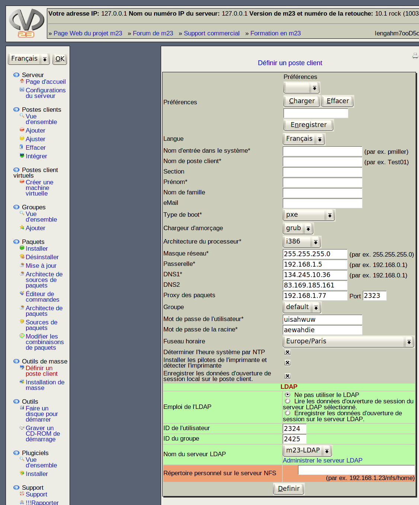

Les configurations faites sur cette page seront utilisées pour tous les postes client créés par l'installation de masse, les postes client seront calqués sur ce modèle .

Quelques-unes de ces valeurs peuvent varier d'un poste client à l'autre.
Celles-ci peuvent être chargées depuis un fichier, entrées manuellement, générées automatiquement ou conservées pour tous les postes client.
Le choix du type d'entrée des configurations est pris pendant l'exécution de l'installation de masse.
dodger
2014-01-22